A las momias no las consumen los gusanos
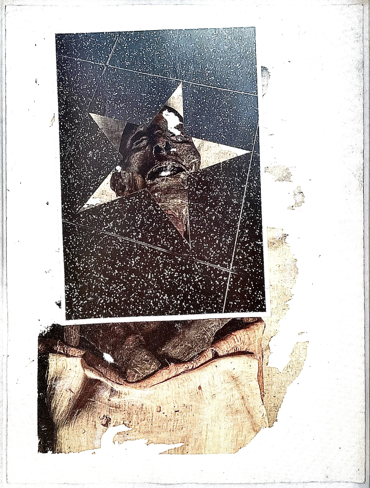
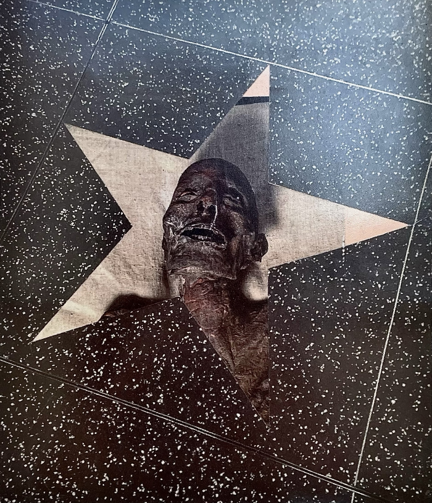
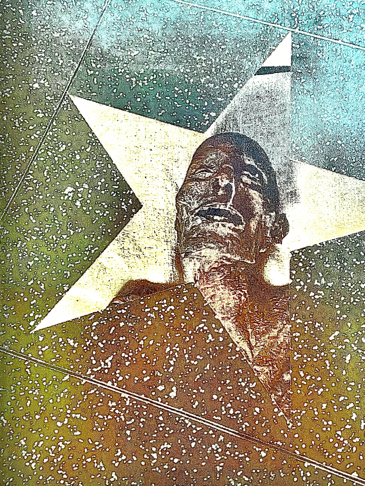
Este proyecto se realizó en Múnich. Inspirado en el Alter Nördlicher Friedhof, que visitaba a diario, observa aquello que permanece y aquello que desaparece. Se articula en torno a los actos de conservar, guardar, recordar, nombrar, clasificar, proteger y encerrar, pero también de olvidar, perder y descuidar.
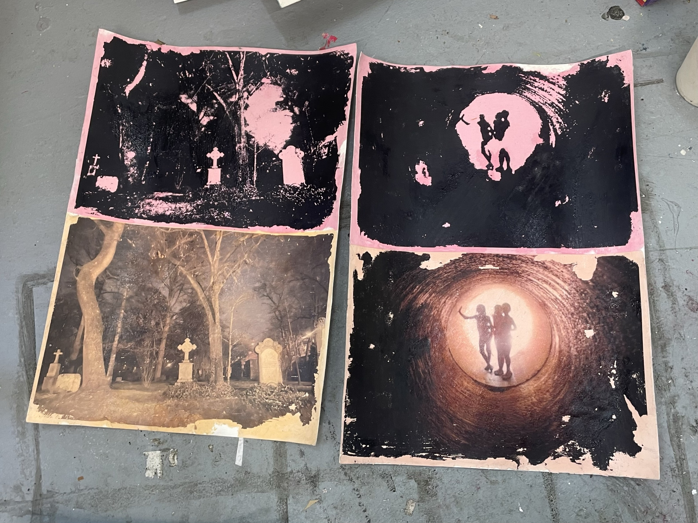
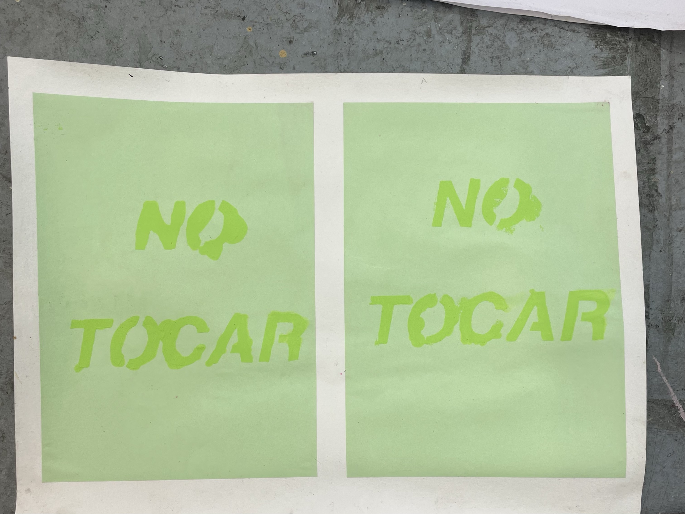
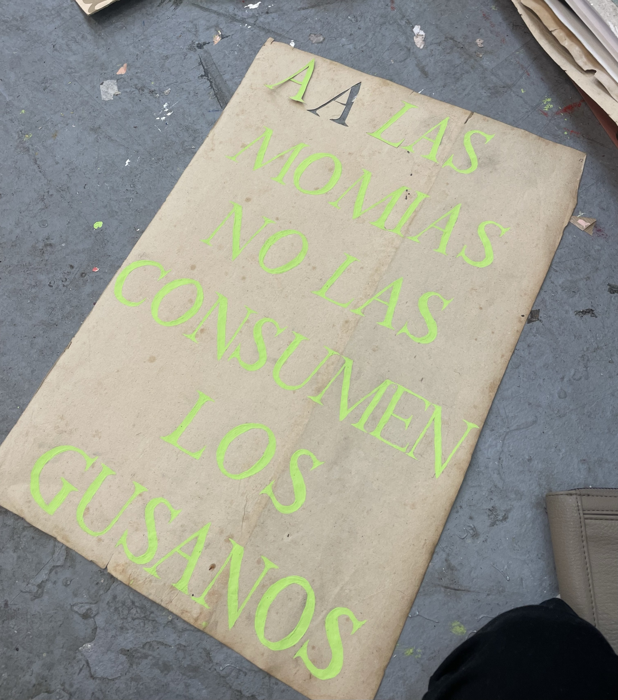
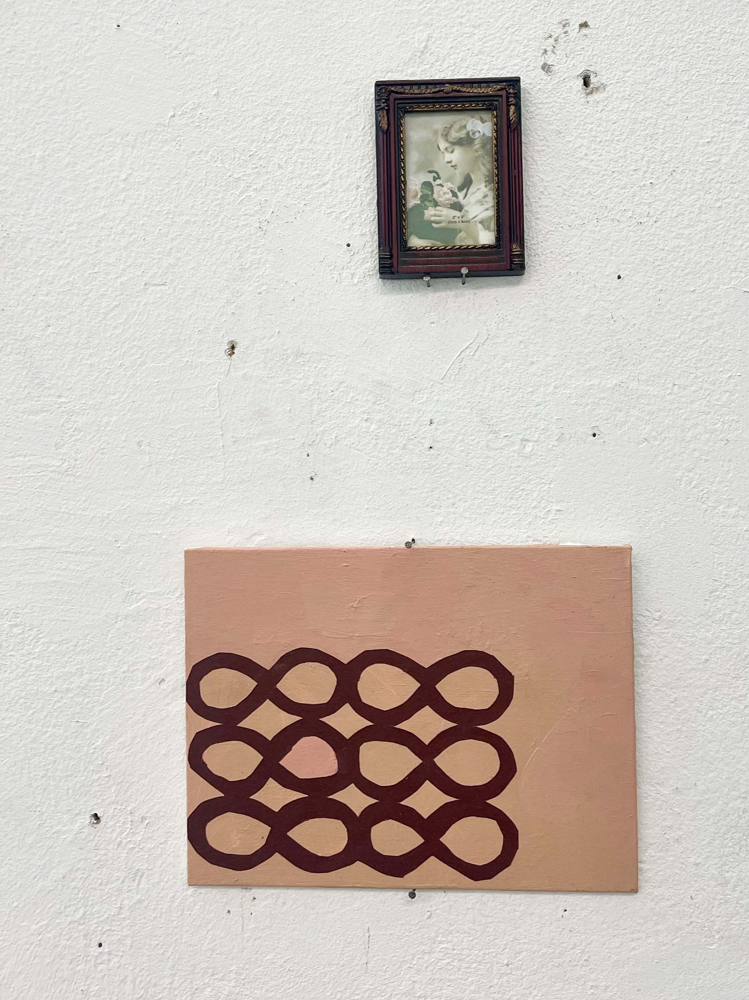
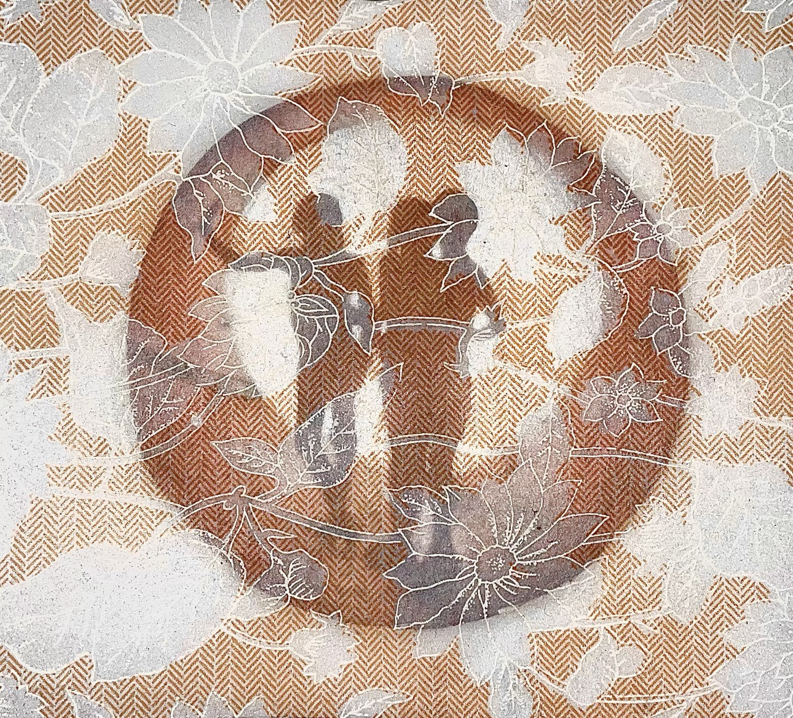
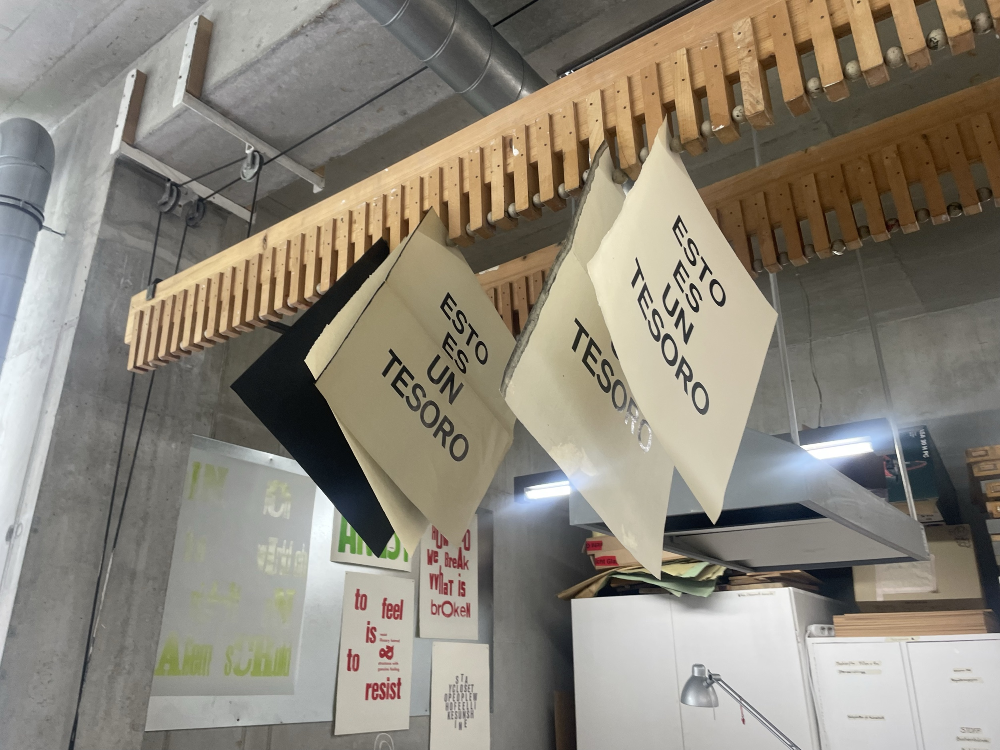
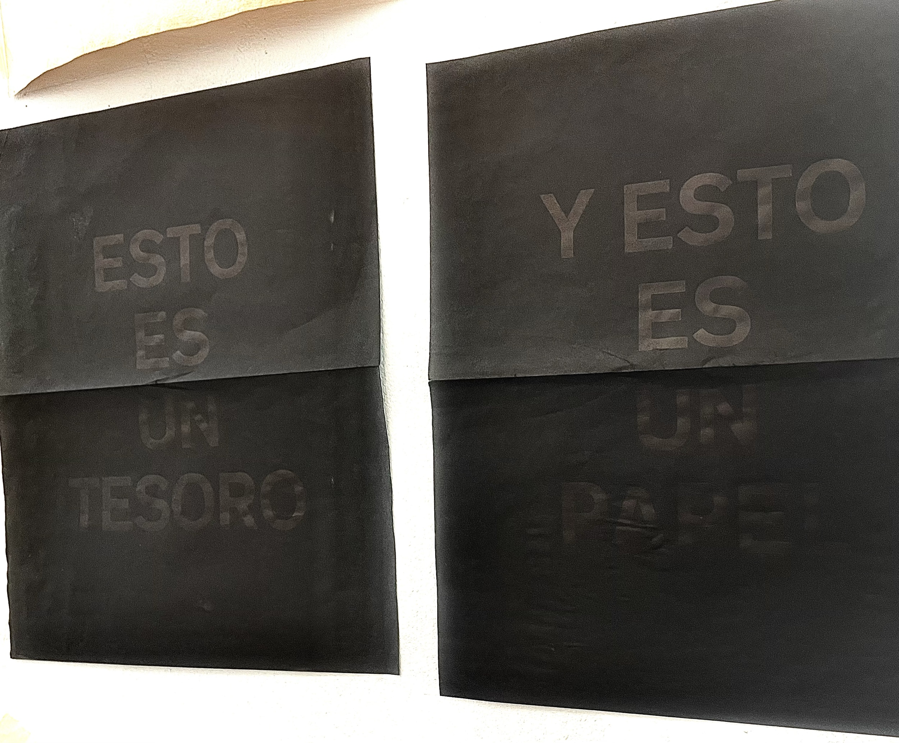
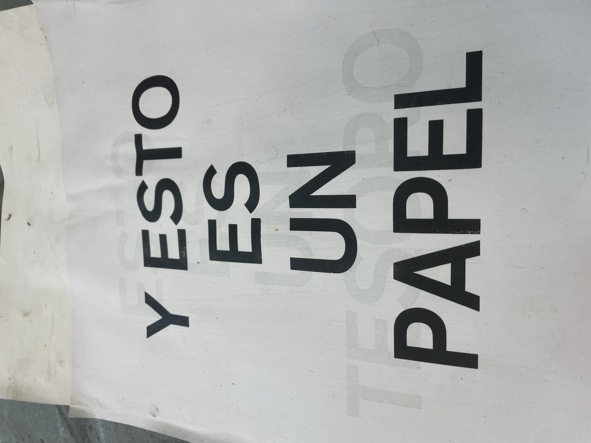
Serie de 3 dípticos de estampas tipográficas, distintos formatos, 2026.
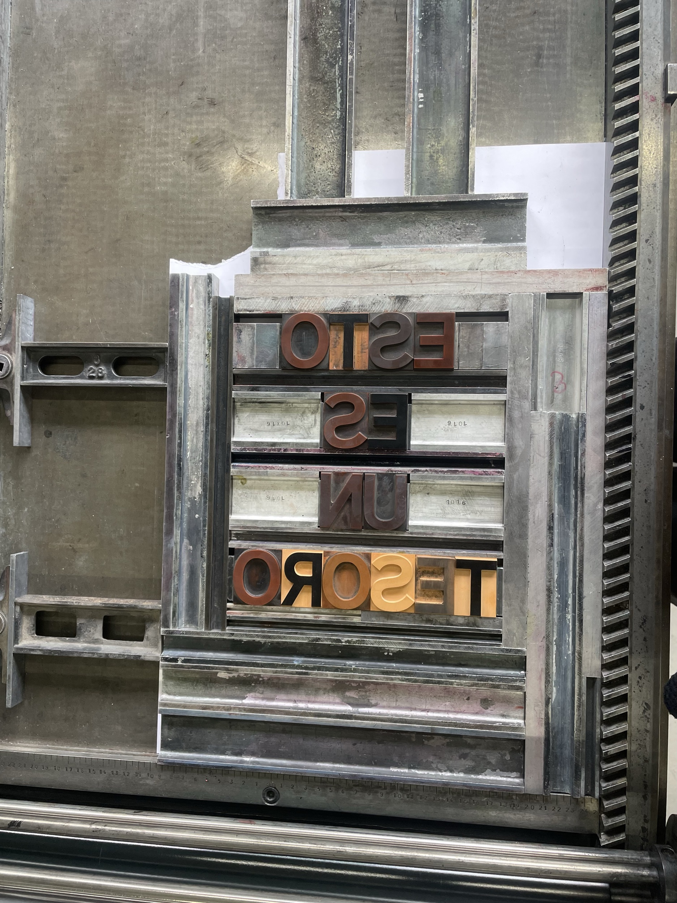
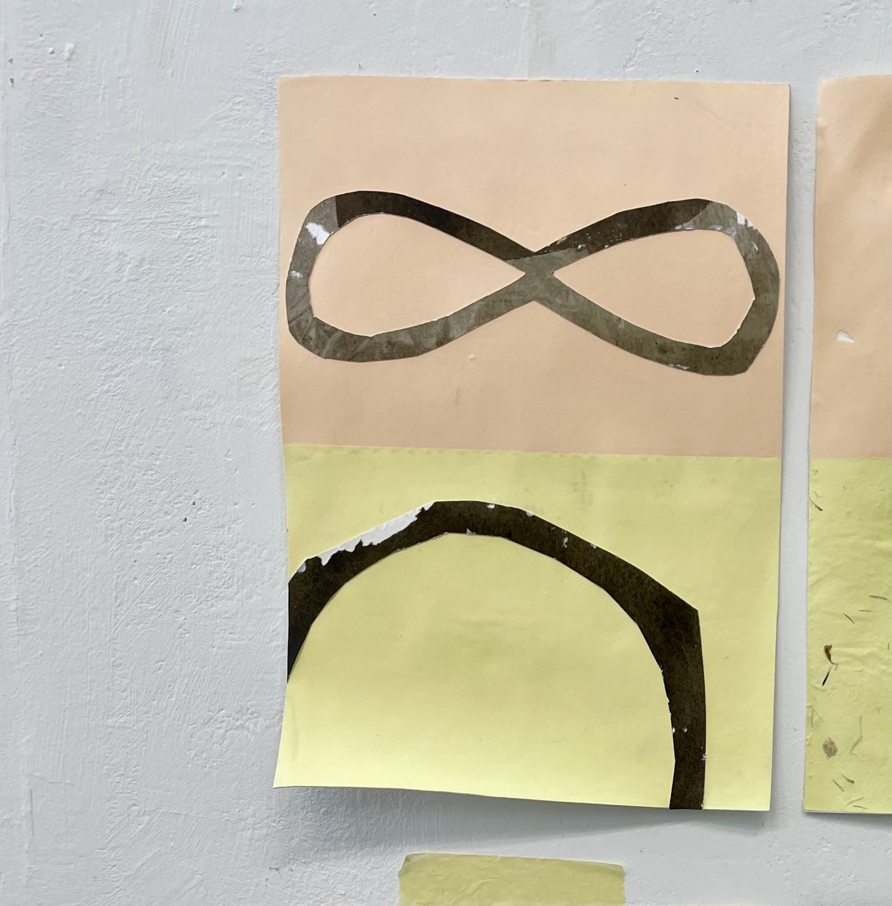